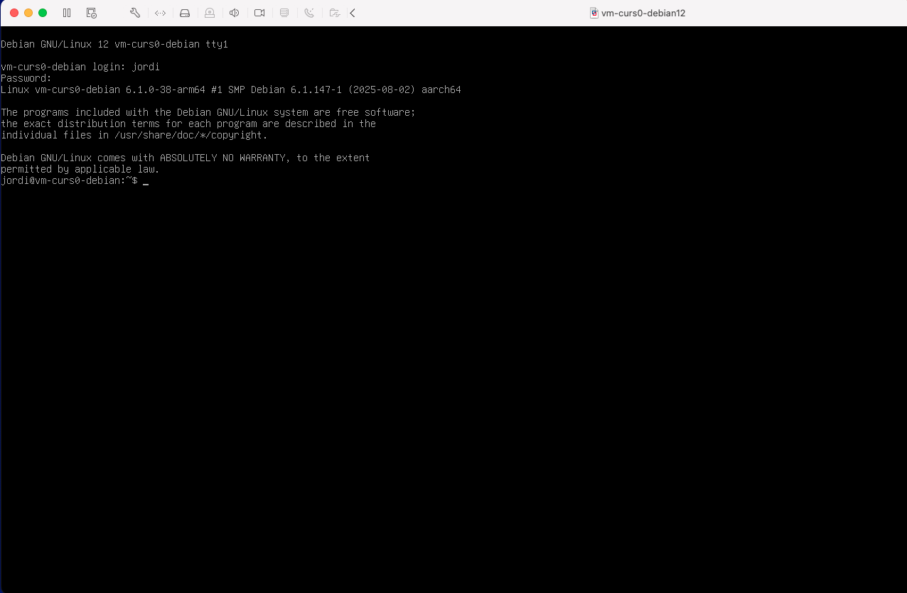

Laboratori 1: Instal·lació de Debian 12
Objectius
- Instal·lar el programari de virtualització VMWare Workstation Pro o VMWare Fusion.
- Instal·lar una mà quina virtual basada en un sistema operatiu Linux.
Instal·lació del Hypervisor (VMWare Workstation Pro o VMWare Fusion)
Aquestes instruccions et guiaran a través del procés per crear un compte a Broadcom i descarregar una de les versions gratuïtes de VMware Workstation Pro (per a Windows) o VMware Fusion (per a macOS).
- Registra’t per a un compte gratuït a Broadcom: Per accedir a les descà rregues de programari de VMware, necessites un compte a la plataforma de Broadcom.
Dirigeix-te a la pà gina de registre de Broadcom: https://profile.broadcom.com/web/registration
Introdueix la teva adreça de correu electrònic, realitza la verificació de seguretat i fes clic a Next
Introdueix el codi de verificació que has rebut al teu correu electrònic. Fes clic a Verify per continuar.
Completa el formulari de registre amb la teva informació personal i crea una contrasenya. Fes clic a Create Account per completar el registre.
Un cop completat el registre, visualitzaràs un missatge de registre correcte. I us demanarà si voleu completar el perfil. Seleccioneu, I will do it later per continuar.
- Accedeix a les descà rregues gratuïtes de VMware:
Ves a la pà gina de login de Broadcom: https://profile.broadcom.com/web/login
Inicia sessió amb el teu correu electrònic i la contrasenya que has creat.
Ves directament a la secció de descà rregues a (https://support.broadcom.com/group/ecx/free-downloads).
Selecciona VMware Workstation Pro o VMware Fusion segons el teu sistema operatiu (Windows o macOS). En el meu cas, utiltizo Mac, aixà que seleccionaré VMware Fusion.
Seleccioneu la versió que voleu descarregar. En aquest cas, podem seleccionar la versió més recent.
En la pà gina següent:
- Fes clic a l’enllaç de termes i condicions per que s’activi el checkbox de l’acceptació.
- Acceptar els termes i condicions.
- Fes clic a descà rrega per començar a descarregar el fitxer d’instal·lació.
- Instal·la VMware Workstation Pro o VMware Fusion.
Descarrega de la imatge ISO de Debian 12.5.0
Ves a la pà gina de descà rrega de Debian 12.5.0: https://get.debian.org/images/archive/12.5.0/
Selecciona la imatge ISO per a la teva arquitectura (amd64 o arm64). La majoria dels vostres ordinadors tenen processadors amd64 (Intel o AMD). Els processadors ARM són més comuns en dispositius mòbils i en els nous Mac amb xips M.
Seleccioneu la carpeta iso-cd.
Seleccioneu el fitxer debian-12.5.0-x-netinst.iso. On x és l’arquitectura del vostre sistema (amd64 o arm64).
💡 Nota:
La imatge netinst és una imatge d’instal·lació mÃnima que descarrega els paquets necessaris durant la instal·lació. Això permet personalitzar la instal·lació i seleccionar els paquets que voleu instal·lar.
Configuració de la mà quina virtual amb VMWare
- Selecciona l’opció
Create a New Virtual Machinea VMWare Workstation Pro o VMWare Fusion. - Selecciona Install from disc or image.
- Selecciona la imatge ISO de Debian 12.
- Configura els recursos de la mà quina virtual.

- Anomena la mà quina virtual i selecciona la ubicació on es guardarà . Per exemple, podeu posar el nom
vm-curs0-debian12i seleccionar una ubicació al vostre directori d’usuari.
Instal·lació del sistema operatiu
Un cop iniciada la mà quina virtual, podeu seleccionar la opció Install o bé Graphical install.
En aquest tutoriral, seleccionarem la opció Graphical install per a una instal·lació més amigable. La principal diferència entre les dues opcions és l’entorn grà fic.
Selecciona l’idioma d’instal·lació.
Podeu seleccionar l’idioma que vulgueu per a la instal·lació. En aquest cas, seleccionarem l’idioma Català .
Selecciona la ubicació geogrà fica.
En aquest cas, seleccionarem la ubicació Espanya.
Selecciona la disposició del teclat.
En aquest cas, seleccionarem la disposició de teclat Català . Això ens asegurarà un mapeig correcte del teclat.
Espereu que el sistema carregui els components necessaris.
Configura la xarxa.
- El primer pas és configurar el nom d’amfitrió o hostname. Aquest nom permet identificar de forma única el vostre sistema. Podeu deixar el nom per defecte o canviar-lo al vostre gust.
En aquest cas, hem canviat el nom d’amfitrió a
vm-curs0-debian12, però podeu posar el nom que vulgeu comdebianlab, etc.- El segon pas és configurar el domini de la xarxa. Aquest pas el podeu deixar en blanc si no teniu un domini especÃfic. O bé, podem utilitzar
.localcom a domini local per identicar que el servidor pertany a la xarxa local.
Configura l’usuari administrador.
En aquest punt, heu de tenir en compte que si no poseu cap contrasenya, es crearà l’usuari normal amb permisos de
sudoi això us permetra executar comandes amb privilegis d’administrador.Si poseu una contrasenya, aquesta serà la contrasenya de l’usuari
rooti no es crearà un usuari normal amb permisos desudo. I tampoc s’instal·larà el paquetsudo.âš ï¸ Compte
Com utilitzarem les mà quines virtuals com a laboratoris de prà ctiques, no cal que poseu una contrasenya molt segura. Podeu utilitzar una com a
1234. Però, recordeu que en un entorn real, la seguretat és molt important i cal utilitzar contrasenyes segures.Configura un usuari normal.
- Nom complet: Podeu posar el vostre nom complet o el que vulgueu.
- Nom d’usuari: Podeu posar el vostre nom d’usuari o el que vulgueu.
- Contrasenya: El mateix que per l’usuari
root.
Configura la zona horà ria.
En aquest cas, seleccionarem la zona horà ria de Madrid.
Configura el disc dur.
- Particionament: En aquest curs, el tema del particionament no és molt important. Per tant, podeu fer servir la configuració per defecte més senzilla (Guiat - utilitzar el disc sencer). Aquesta configuració crearà les particions necessà ries per a l’instal·lació del sistema.
- Selecciona el disc on instal·lar el sistema. En el meu cas, només tinc un disc virtual amb l’etiqueta
/dev/nvme0n1. L’etiqueta indica el tipus de disc (NVMe) i el número de disc (1). Es possible tenir altres etiquetes com/dev/sdaper discos SATA o/dev/vdaper discos virtuals.
- Particions: Podeu seleccionar (Tots els fitxers en una partició) per simplificar la gestió i evitar problemes podeu seleccionar aquesta opció. Aquesta opció crearà una sola partició per a tot el sistema.
- Confirmeu els canvis. En aquest punt, el sistema crearà les particions necessà ries:
- La primera partició serà la partició
/booton es guardaran els fitxers per arrancar el sistema. - La segona partició serà la partició
/on es guardaran els fitxers del sistema. - La tercera partició serà la partició de swap on es guardaran les dades de la memòria virtual.
- La primera partició serà la partició
ℹ️ Què és la partició swap?
La
swapés una partició especial que s’utilitza com a memòria virtual quan la memòria RAM s’omple. Aquesta partició permet alliberar memòria RAM i evitar que el sistema es bloquegi.- Escriu els canvis al disc.
Espera que s’instal·li el sistema.
Configura el gestor de paquets.
- Analitzar els discos de la instal·lació. Aquest pas permet seleccionar els discos on es troben els paquets d’instal·lació. Normalment, aquest pas no cal modificar-lo.
Configura el gestor de paquets. En aquest cas, seleccionarem el servidor de paquets més proper a la nostra ubicació.
Filtrar els servidors de paquets per ubicació.
Seleccionar el servidor de paquets.
👀 Nota:
A vegades, els servidors de paquets poden estar saturats o no funcionar correctament. En aquest cas, podeu seleccionar un servidor alternatiu o provar més tard.
Configura el proxy. Si esteu darrere d’un proxy, podeu configurar-lo en aquest pas.
ℹ️ Què és un proxy?
Un proxy és un servidor intermediari entre el vostre sistema i Internet. Aquest servidor pot ser utilitzat per controlar l’accés a Internet, per protegir la vostra privacitat o per accelerar la connexió a Internet. Les peticions de connexió a Internet es fan a través del servidor proxy, que actua com a intermediari i reenvia les peticions al servidor de destinació. Per exemple, en una empresa, el proxy pot ser utilitzat per controlar l’accés a Internet dels empleats i protegir la xarxa interna de possibles amenaces.
Espera que s’instal·lin els paquets.
Configura el paquet
popularity-contest.- Aquest paquet permet enviar informació anònima sobre els paquets instal·lats al servidor de Debian per millorar la selecció de paquets i la qualitat dels paquets. Podeu seleccionar si voleu participar en aquest programa o no.
Selecció de programari. En aquest punt podeu seleccionar si voleu un servidor en mode text o amb interfÃcie grà fica. També us permet seleccionar si voleu instal·lar els serveis web i ssh al servidor i finalment si voleu les utilitats està ndard del sistema. Seleccionarem el servidor en mode text, el servei SSH activat i les utilitats està ndard del sistema.
ℹ️ Què és un servidor en mode text?
Un servidor en mode text és un servidor que no té una interfÃcie grà fica. Això significa que tota la interacció amb el servidor es fa a través de la lÃnia de comandes. Aquest tipus de servidor és molt comú en entorns de producció, ja que consumeix menys recursos i és més segur que un servidor amb interfÃcie grà fica.
ℹ️ Què és el servei SSH?
El servei SSH (Secure Shell) és un protocol de xifratament que permet connectar-se de forma segura a un servidor remot. Aquest servei és molt utilitzat per administrar servidors a distà ncia, ja que permet accedir al servidor de forma segura i xifratada.
Espera que s’instal·li el programari.
Instal·la el gestor d’arrancada GRUB.
Instal·lació acabada. Un cop finalitzada la instal·lació, el sistema es reiniciarà i podreu accedir al GRUB per seleccionar el sistema operatiu.
El GRUB us permet accedir al sistema operatiu. En aquest cas, seleccionarem Debian GNU/Linux. La resta d’opcions les veurem més endavant en el curs.
ℹ️ Què és el GRUB?
El GRUB és un gestor d’arrencada que permet seleccionar el sistema operatiu que volem iniciar. Aquest gestor és molt útil en sistemes amb múltiples sistemes operatius o múltiples versions del mateix sistema operatiu.
Inicieu sessió amb l’usuari i la contrasenya que heu configurat durant la instal·lació.

AlertaQuan escriviu la contrasenya, no es mostrarà cap carà cter a la pantalla. Això és normal en sistemes Unix/Linux per motius de seguretat. Simplement escriviu la contrasenya i premeu Enter.
Tanqueu la sessió amb la comanda
exit.Inicieu sessió amb l’usuari
rooti la contrasenya que heu configurat durant la instal·lació.
Exercicis adicionals
- Instal·leu altres mà quines virtuals amb altres sistemes operatius en mode grà fic com: